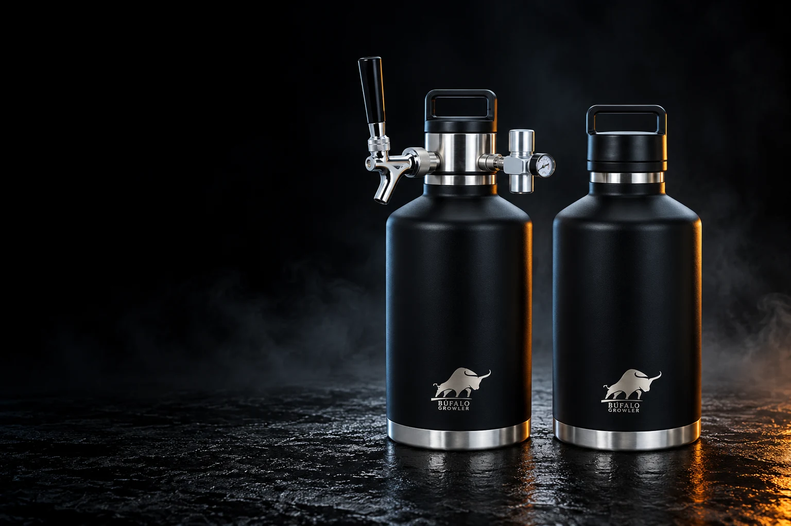

BÚFALO ON TAP · COM VOCÊ, LÁ FORA.
Seu próximo brinde.
Do seu jeito.
Encontre a chopeira que combina com seus planos.
Da conversa a dois à manada reunida.
COMECE PELO SEU MOMENTO
Como vai ser o encontro?
Escolha uma ocasião. A gente sugere por onde começar.

VÁ DIRETO AO QUE VOCÊ GOSTA
Já sabe o que procura?
Conheça a linha pelo seu jeito de servir.
Explore os nove produtosO CHOPE É SEU. O MOMENTO TAMBÉM.
Um bom encontro começa
muito antes do primeiro brinde.
Escolha a companhia, passe na sua cervejaria favorita e encontre o seu lugar. A Búfalo vai junto.
Escolha o seu modelo.
Uma chopeira para servir, um combo para ampliar os planos ou um growler para levar.
Leve o que você gosta.
Combine o abastecimento com sua cervejaria e prepare o recipiente conforme as orientações do modelo.
Faça do lugar um encontro.
Na varanda, no jardim ou à mesa. Organize os copos, reúna a turma e aproveite a conversa.
ENCONTRE SUA COMPANHIA
Diferentes planos.
A mesma vontade de brindar.
Quatro chopeiras. Dois combos. Dois growlers.
E uma bag para levar seu próximo encontro.


CHOPEIRAS · 2 L
On TAP 2 L
Seu bar. Onde você estiver.
Uma chopeira portátil para transformar uma pausa em um bom encontro. Corpo em inox 18/8, isolamento a vácuo e torneira com regulador de CO₂.
- Sistema de 2 L com dispensador
- Regulador com manômetro
- 5 cápsulas de CO₂ de 16 g
Fim de tarde a dois
Leve o chope da sua cervejaria favorita para um encontro na varanda. Organize os copos, escolha a trilha e sirva sem sair da conversa.
O barril tem 1,9 L; com o dispensador, o sistema tem capacidade de 2 L, conforme a loja.
Ver On TAP 2 L na loja
CHOPEIRAS · 3,5 L
On TAP 3,5 L · Preta
O clássico que reúne a turma.
Preto, inox e presença. A On TAP 3,5 L combina uma capacidade maior com o sistema de servir chope na torneira.
- 3,5 L
- Aço inox 18/8
- 5 cápsulas de CO₂ de 16 g
Churrasco entre amigos
Reserve um lugar firme à mesa, perto dos copos e longe do calor da churrasqueira. A proposta: servir o chope e aproveitar cada rodada com a turma.
CHOPEIRAS · 3,5 L
On TAP 3,5 L · Laranja
Mais cor para o seu lado de fora.
O mesmo ritual de servir, com a energia do laranja Búfalo. Uma escolha para quem gosta de levar personalidade para a mesa.
- 3,5 L
- Isolamento a vácuo
- Regulador com manômetro
Encontro no jardim
Monte uma mesa à sombra para o almoço de fim de semana. Combine a chopeira com copos e petiscos e faça do jardim seu ponto de encontro.

CHOPEIRAS · 3,5 L
On TAP 3,5 L · Creme
Um brinde que combina com a casa.
Um tom claro, o contraste do inox e espaço para o próximo encontro. A versão creme leva o sistema On TAP à sua composição de mesa.
- 3,5 L
- Acabamento creme
- 5 cápsulas de CO₂ de 16 g
Receber em casa
Para uma noite de jogos ou um jantar informal, deixe a chopeira em uma superfície estável e organize uma estação de copos para os convidados.

COMBOS · 3,5 L + 2 L
Mestre Búfalo · Combo 5,5 L
Do encontro pequeno ao plano maior.
Dois growlers em capacidades diferentes e um kit dispensador. Uma composição para adaptar o que você leva ao tamanho do encontro.
- 1 growler de 3,5 L + 1 de 2 L
- 1 kit dispensador
- 5 cápsulas de CO₂ de 16 g
Um fim de semana, vários planos
Use o growler menor em uma visita rápida e reserve o maior para reunir mais gente. Planeje o abastecimento dos dois antes de sair.
5,5 L é a soma das capacidades dos dois growlers. O combo inclui um único kit dispensador.
Ver Mestre Búfalo · Combo 5,5 L na lojaCOMBOS · 2 × 3,5 L
Mestre Búfalo · Combo 7 L
Quando a manada está completa.
Dois growlers de 3,5 L e um kit dispensador para encontros que pedem mais planejamento e mais espaço para o chope.
- 2 growlers de 3,5 L
- 1 kit dispensador
- 5 cápsulas de CO₂ de 16 g
A mesa da confraternização
Organize o abastecimento antes da chegada da turma e identifique cada growler. Se escolher rótulos diferentes, apresente cada opção aos convidados.
7 L é a soma das capacidades dos dois growlers. O combo inclui um único kit dispensador.
Ver Mestre Búfalo · Combo 7 L na loja
GROWLERS · KUNDI
Growler Kundi 2 L
Da cervejaria para o seu encontro.
Um growler com isolamento a vácuo e tampa rosqueável para levar sua bebida. Uma opção para quem busca o recipiente, sem o conjunto de torneira On TAP.
- Aço inox 18/8
- Isolamento a vácuo
- Tampa com alça
Buscar seu rótulo favorito
Combine uma passagem pela cervejaria com o encontro na casa de amigos. Leve o growler limpo e confira com o estabelecimento o procedimento de abastecimento.
Nome comercial da loja: Kundi 2 L. A descrição técnica informa 1,9 L; confirme a capacidade com a equipe antes da compra.
Ver Growler Kundi 2 L na loja
GROWLERS · 3,5 L
Growler Kundi 3,5 L
Mais espaço para o próximo brinde.
A capacidade de 3,5 L em um growler de inox com parede dupla e tampa rosqueável. Para transportar a bebida e servir do seu jeito.
- 3,5 L
- Aço inox 18/8
- Tampa com alça
Almoço em família
Planeje a quantidade para o encontro e deixe os copos prontos à mesa. É uma alternativa para levar o chope sem escolher um kit com torneira.

ACESSÓRIO · TRANSPORTE
Bag Tiracolo para Chopeira
Seu próximo destino, de mãos livres.
Uma bag de transporte em lona de PVC, com alça regulável, ombreira acolchoada e mosquetões de metal.
- Lona de PVC
- Alça regulável
- Ombreira acolchoada
O caminho até o churrasco
Ajuste a alça ao corpo antes de caminhar até o encontro. Confira o encaixe e a compatibilidade com seu growler na loja para escolher a bag certa.
Acessório de transporte. Confira os itens inclusos e a compatibilidade na página do produto.
Ver Bag Tiracolo para Chopeira na lojaPRONTO PARA O PRÓXIMO ENCONTRO
Um bom ritual
começa no cuidado.
Confira o manual e as orientações do seu modelo antes de montar, abastecer e servir.
- Planeje o abastecimento.
Leve o recipiente limpo e confirme as orientações com sua cervejaria.
- Prepare o seu espaço.
Sirva sobre uma superfície firme e siga o manual para o uso do regulador e do CO₂.
- Cuide depois do brinde.
Lave à mão com detergente neutro e esponja macia. Deixe secar aberto. Não use lava-louças, freezer ou geladeira.
ANTES DE ESCOLHER
Vamos tirar suas dúvidas.
Qual a diferença entre a On TAP e o Kundi?
As chopeiras On TAP incluem torneira, dispensador e regulador de CO₂. Os growlers Kundi são recipientes térmicos com tampa. Confira os itens inclusos na página de cada produto.
Os combos têm uma chopeira de 5,5 L ou 7 L?
São as capacidades somadas de dois growlers. O combo 5,5 L reúne um de 3,5 L e um de 2 L. O combo 7 L reúne dois de 3,5 L. Cada combo inclui um único kit dispensador.
As cápsulas de CO₂ acompanham a chopeira?
Na consulta à loja, as On TAP e os combos incluem cinco cápsulas de CO₂ alimentício de 16 g. Consulte os itens inclusos no momento da compra. Há restrições para transporte aéreo; a equipe pode ajustar ou separar o envio.
Onde vejo preço, cores e disponibilidade?
Nos botões de cada seção você acessa o produto na loja oficial, com preço, estoque, frete e condições atualizados. A seleção desta página foi conferida em 29/10/2026.
A PRÓXIMA HISTÓRIA COMEÇA AQUI.
Qual vai ser
o seu próximo encontro?
Escolha sua Búfalo. O destino é com você.
Ver a linha completa na loja